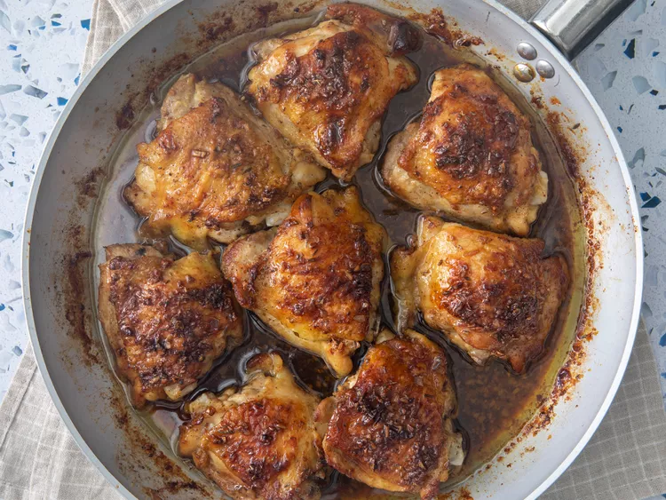

Chicken

Description
Brown sugar chicken baked in a sweet honey-garlic sauce develops a deliciously browned and crispy skin as it cooks in the oven. I love the crunchy chicken skin and brown sugar pan sauce that comes out of this.
- bone-in, skin-on chicken thighs
- salt and ground black pepper
- unsalted butter
- garlic
- brown sugar
- honey
- dried oregano
- dried thyme
- dried basil
- Gather all ingredients.
- preheat oven to 400 degrees
- season chicken thighs with salt and pepper
- melt butter in skillet, add chicken and sear, remove chicken to a plate
- melt remaining butter, add garlic and cook, stir in brown sugar, honey, oregano, thyme, and basil until well combines
- roast in preheated oven until chicken is no longer pink and juices run clear
- drizzle pan sauce over chicken thighs when serving
Home